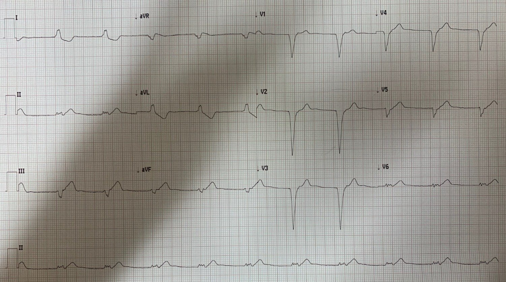
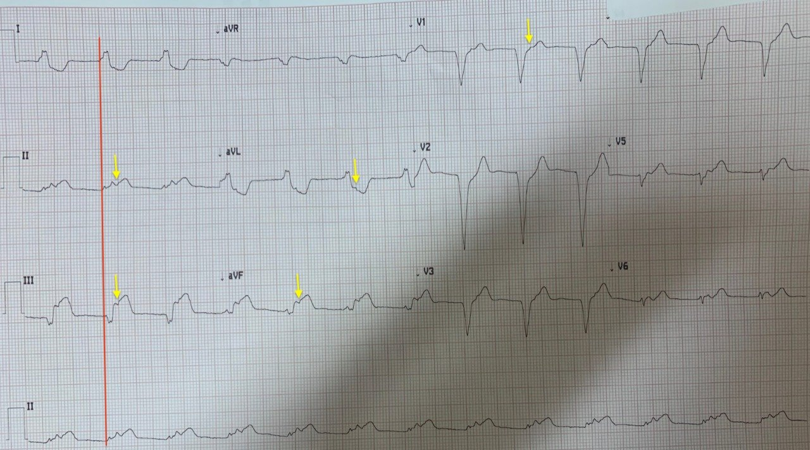

13/07/2021 — Điện tâm đồ này đáp ứng quy tắc Sgarbossa cải biên nào? Và nhịp là gì?
Bản dịch tiếng Việt của bài "Which Modified Sgarbossa Rule does this meet? And what is the Rhythm?" – Dr. Smith’s ECG Blog. Giữ nguyên toàn bộ 3 hình ảnh của bản gốc.
Một độc giả gửi điện tâm đồ này và hỏi “Steve, đây có thể là tăng kali máu (hyperK) không?” Anh ấy không gửi kèm thông tin lâm sàng nào.


Bạn nghĩ sao?
Câu trả lời của tôi: “Đây là OMI thành dưới.” Có LBBB và một [người dịch: nguyên văn bị thiếu chữ ở đây] với kết quả âm tính giả theo tiêu chuẩn Sgarbossa cải biên.”
Nhịp cũng thú vị, nhưng không ảnh hưởng đến chẩn đoán OMI: cũng không có sóng P trước phức bộ QRS. Phức bộ rộng gợi ý nhịp tự thất, nhưng thực ra đây là nhịp bộ nối gia tốc kèm blốc nhánh trái (LBBB). Nhịp tự thất sẽ có phần khởi đầu QRS chậm hơn, tương tự VT (và nó cũng không thể là VT vì quá chậm). Vậy đây là nhịp bộ nối gia tốc kèm sóng P ngược dòng và LBBB). (Tôi đã xác nhận điều này với bậc thầy về nhịp, Ken Grauer, người đã chú thích điện tâm đồ thứ 2 bên dưới để chỉ ra các sóng P ngược dòng).
Có sóng T tối cấp rõ ràng ở các chuyển đạo thành dưới và cả ở V5 và V6, nhưng điện tâm đồ không đáp ứng rõ ràng tiêu chuẩn nào trong 3 tiêu chuẩn Sgarbossa cải biên theo Smith. Có ST chênh lên đồng hướng tối thiểu ở chuyển đạo III (một số người có thể đo được 1 mm, nhưng không nhất quán ở chỉ 2 phức bộ có được), và ST chênh xuống đồng hướng chỉ dưới 1 mm ở V1-V3. Cũng không có ST chênh lên nào lớn hơn 25% sóng S đi trước (không có ST chênh lên ngược hướng quá mức xét theo tỷ lệ).
Nhưng có một quy tắc khác mà chúng tôi đã xây dựng và thẩm định là RẤT ĐẶC HIỆU, dù có lẽ không nhạy, đối với OMI: ST chênh xuống (hoặc STE) ngược hướng, không tương xứng với sóng R (hoặc sóng S) đi trước, chỉ ở một chuyển đạo, với tỷ số ST/S hoặc ST/R ít nhất 30%. Nếu lớn hơn 30%, quy tắc này đặc hiệu gần 100%. Chuyển đạo aVL có ST chênh xuống 1.25 mm và sóng R 3.75 mm, cho tỷ số 33%.
Một số người sẽ nói “điện tâm đồ này đáp ứng tiêu chuẩn Barcelona về độ lệch ST ít nhất 1 mm ngược hướng với QRS ở bất kỳ chuyển đạo nào có điện thế R hoặc S tối đa không quá 6 mm.” Dù điều này đúng, tiêu chuẩn Barcelona chỉ nên được nhắc tới để lên án nó. Phương pháp nghiên cứu không có giá trị. Xem tại đây: Barcelona Rule on Left Bundle Branch Block: Lots of Issues. (Quy tắc Barcelona trong blốc nhánh trái: Nhiều vấn đề.) Xem vấn đề nghiêm trọng nhất được bàn luận bên dưới.
Xem tài liệu tham khảo về tiêu chuẩn Sgarbossa cải biên ở phía dưới xa:
Sau đó, có một điện tâm đồ theo dõi:

Điện tâm đồ này cho thấy rõ diễn tiến của nhồi máu cơ tim thành dưới và thành sau. Vẫn còn nhịp bộ nối gia tốc.
Kết cục:
Bệnh nhân được đưa đi chụp mạch vành và phát hiện RCA đoạn giữa tắc 100%, và 3 stent đã được đặt. Tôi không có dữ liệu troponin hay siêu âm tim, hay điện tâm đồ theo dõi.
Ken Grauer đã chú thích điện tâm đồ thứ 2, kèm giải thích bên dưới.


Điện tâm đồ #2 (và điều này cũng áp dụng cho điện tâm đồ đầu tiên:
— đường thẳng đứng màu ĐỎ cho thấy điểm khởi đầu QRS (vì vậy KHÔNG có sóng P xoang).
Thay vào đó — nhiều chuyển đạo cho thấy sóng P ngược dòng (mũi tên VÀNG). Hình thái
QRS phù hợp với LBBB (dù không có sóng R một pha ở
chuyển đạo V6 …. Đáng lo ngại là ST chênh lên nguyên phát rõ rệt ở mỗi
chuyển đạo thành dưới (chuyển đạo III >> II) — kèm ST chênh xuống soi gương kiểu hình ảnh phản chiếu
ở chuyển đạo I và aVL (nhiều hơn hẳn so với mức có thể chờ đợi
với LBBB đơn thuần). Lưu ý điểm J chênh xuống ở chuyển đạo V2 (điều này không
bình thường) — và sau đó là sóng T tối cấp ở V5,V6 — như vậy phù hợp với
tắc RCA cấp gây ra nhịp thoát bộ nối gia tốc kèm
LBBB và STEMI dưới-sau-bên cấp.
Điện tâm đồ #2
— Lại là nhịp bộ nối, dù với tần số chậm hơn một chút + LBBB
(dù vẫn không có sóng R một pha ở các chuyển đạo ngực bên) — vẫn còn
sóng T tối cấp ở các chuyển đạo thành dưới và chuyển đạo ngực bên, kèm thay đổi soi gương
ở aVL — dù ST chênh lên ít hơn ở điện tâm đồ #2 (và điểm J ST
chênh xuống ít hơn ở aVL)
Cần lưu ý — Việc không có sóng R ở các chuyển đạo ngực bên có thể phản ánh sự mất các lực khử cực hướng bên do STEMI.
Tài liệu tham khảo về tiêu chuẩn Sgarbossa cải biên theo Smith
Diagnosis of ST-elevation myocardial infarction in the presence of left bundle branch block with the ST-elevation to S-wave ratio in a modified Sgarbossa rule. (Chẩn đoán nhồi máu cơ tim ST chênh lên khi có blốc nhánh trái bằng tỷ số ST chênh lên/sóng S trong quy tắc Sgarbossa cải biên.)
_______
Validation of the modified Sgarbossa criteria for acute coronary occlusion in the setting of left bundle branch block: A retrospective case-control study. (Thẩm định tiêu chuẩn Sgarbossa cải biên đối với tắc mạch vành cấp trong bối cảnh blốc nhánh trái: một nghiên cứu bệnh-chứng hồi cứu.)
Liên kết toàn văn ở đây.
_______
Electrocardiographic Diagnosis of Acute Coronary Occlusion Myocardial Infarction in Ventricular Paced Rhythm Using the Modified Sgarbossa Criteria (Chẩn đoán điện tâm đồ nhồi máu cơ tim do tắc mạch vành cấp trong nhịp tạo nhịp thất bằng tiêu chuẩn Sgarbossa cải biên)
Tiêu chuẩn Barcelona dựa trên một nghiên cứu có sai sót chết người
Đây là một đoạn trích từ bài báo tôi đang viết cùng một số đồng nghiệp. Một bài phê bình “tiêu chuẩn Barcelona”, vốn chỉ nên được nhắc tới để lên án nó.
Điểm tranh cãi cuối cùng
liên quan đến các ngưỡng tỷ số cTn thấp không phù hợp (nồng độ đỉnh chia cho
giới hạn trên tham chiếu) mà các tác giả của nghiên cứu Barcelona sử dụng. Di Marco
và cs. dùng tỷ số cTn là 10, dựa theo một nghiên cứu riêng của
Gonzalez và cs. [1]. Đây là một sự trình bày sai về
Gonzalez và cs., những người đã nêu không đúng rằng xét nghiệm cTn của họ có
điểm cắt URL bách phân vị 99% là >0.001 µg/L (1ng/L, hay 0.001 ng/mL). Điều này không đúng,
vì không có xét nghiệm nào trên thị trường có URL thấp như vậy, kể cả mọi xét nghiệm cTn độ nhạy cao
(hs). Với URL này, tỷ số cTn đỉnh là 10 cho ra điểm cắt 0.010
ng/mL, không chỉ là một ngưỡng rất thấp đối với tắc mạch, mà còn quá thấp để
chẩn đoán bất kỳ nhồi máu cơ tim nào, vì nó thấp hơn nhiều so với URL của hầu hết
các xét nghiệm hiện có, dù là hs-cTn thế hệ 4th hay 5th [2].
Ngược lại, trong nghiên cứu thẩm định
của Smith, đại đa số các phép đo cTnI được thực hiện bằng một
xét nghiệm có URL từ 0.032 đến 0.050 ng/mL (µg/L). Do đó, tỷ số cTnI cần để
chẩn đoán OMI cao hơn rất nhiều (>200-300x URL đối với cTnI, và >100x
URL đối với cTnT) so với nghiên cứu Barcelona. Các nhóm nhồi máu cơ tim do tắc với TIMI 0-1 đã được chứng minh
trong các nghiên cứu về tiêu chuẩn Smith luôn cho thấy nồng độ cTnI đỉnh trung bình
>10ng/mL, và nồng độ cTnT đỉnh trong khoảng 2.0-6.0 ng/mL (µg/L). Điều này
nhấn mạnh rằng, để làm tiêu chuẩn tham chiếu cho OMI, ngưỡng troponin phải ở
mức >100x URL.
Đúng như dự đoán với
ngưỡng troponin thấp không phù hợp trong nghiên cứu Barcelona, phần
thông tin bổ sung trực tuyến cho biết 95% tất cả các ca AMI trong nghiên cứu được
xem là “tương đương STEMI.” Điều này trái ngược với tỷ lệ hiện mắc đã biết của
STEMI thực sự và của OMI trong số các ca AMI có dẫn truyền bình thường. Ví dụ, Hillinger và
cs. chỉ ghi nhận 81 ca STEMI (18%) và thêm 54 ca OMI (13%), tổng cộng
135 ca OMI (31%) trong số 438 ca AMI trong đoàn hệ đau ngực
tiến cứu, quy mô lớn, trong thực tế của họ [3].
1. Gonzalez MA, Porterfield CP,
Eilen DJ, Marzouq RA, Patel HR, Patel AA, và cs.. Quartiles of peak
troponin are associated with long-term risk of death in type 1 and STEMI, but
not in type 2 or NSTEMI patients. (Các tứ phân vị của troponin đỉnh liên quan đến nguy cơ tử vong dài hạn ở bệnh nhân nhồi máu cơ tim típ một và STEMI, nhưng không ở bệnh nhân típ hai hay NSTEMI.) Clin Cardiol. 2009 tháng Mười, ngày 01;32(10):
575-583.
2. Hillinger P, Strebel I, Abacherli
R, Twerenbold R, Wildi K, Bernhard D, và cs.. Prospective validation of
current quantitative electrocardiographic criteria for ST-elevation myocardial
infarction. (Thẩm định tiến cứu các tiêu chuẩn điện tâm đồ định lượng hiện hành cho nhồi máu cơ tim ST chênh lên.) Int J Cardiol. 2019 tháng Mười, ngày 01;292: 1-12.
3. Collinson PO, Saenger AK, Apple
FS and IFCC C-CB. High sensitivity, contemporary and point-of-care cardiac
troponin assays: educational aids developed by the IFCC Committee on Clinical
Application of Cardiac Bio-Markers. (Các xét nghiệm troponin tim độ nhạy cao, đương đại và tại chỗ: tài liệu hỗ trợ giáo dục do Ủy ban Ứng dụng Lâm sàng các Dấu ấn Sinh học Tim của IFCC xây dựng.) Clin Chem Lab Med. 2019 tháng Tư, ngày 24;57(5):
623-632.